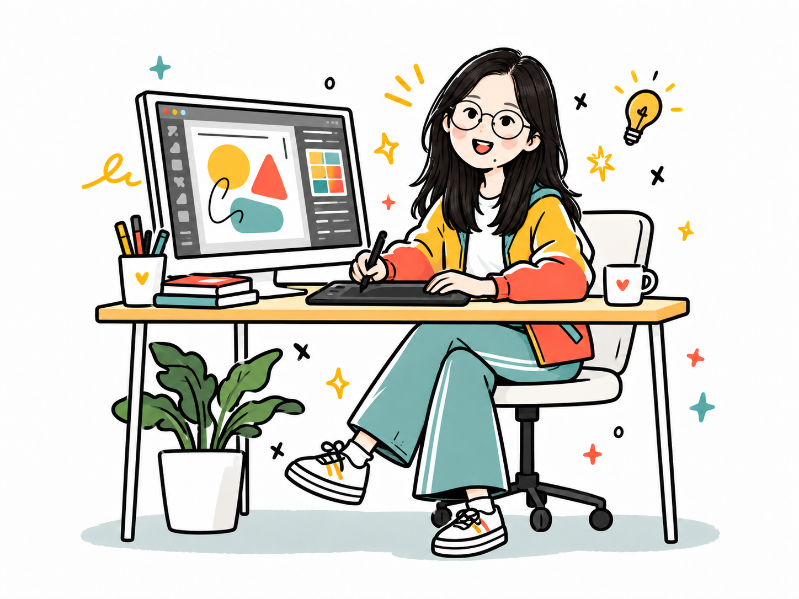
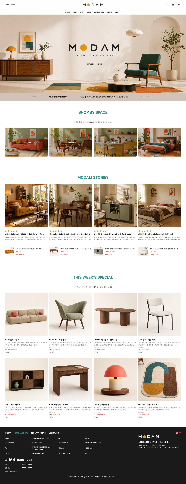
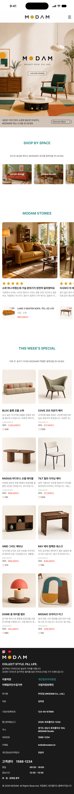
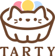
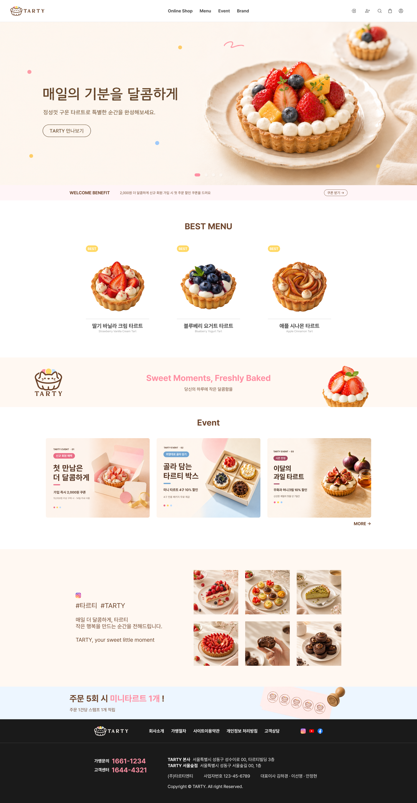
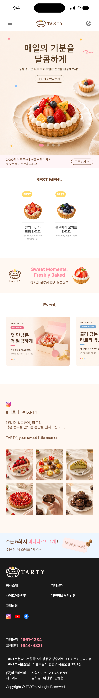
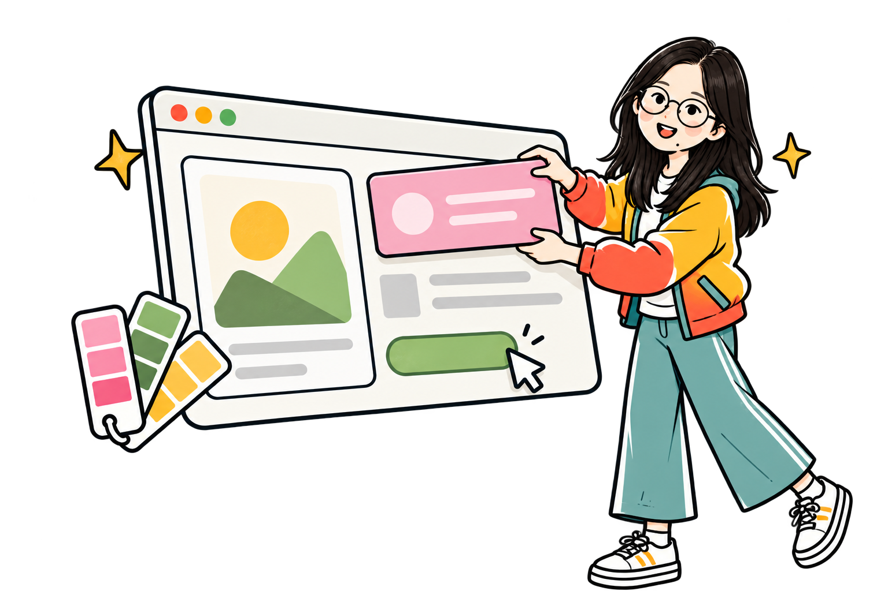

Illustrator
Branding & Vector Graphics
- 브랜드 로고 및 심볼 디자인
- 아이콘 및 벡터 일러스트 제작
- 패턴·장식 그래픽 디자인
- 패키지 및 홍보물 그래픽 디자인
ME, BEFORE THE WORK

아이디어를 구현하는 사람
마음에 드는 디자인을 만나면, 무엇이 눈길을 끄는지 한 번 더 들여다봅니다. 색의 조합부터 글자의 간격, 버튼의 움직임까지 작은 선택이 만드는 차이에 관심이 많습니다. 그렇게 발견한 아이디어를 저만의 방식으로 풀어내며 저의 디자인을 채워갑니다.
AWARDS & CERTIFICATIONS
이미지를 다듬고, 인터랙션을 그리고, 화면을 구현하며
생각 속 디자인을 화면에 담아냅니다
Branding & Vector Graphics
Image Editing & Visual Design
Wireframing & UI Design
Web Publishing & Responsive Design
Data Organization & Analysis
Presentation & Slide Design
Document Writing & Formatting
Content Planning & Ideation
Project Management & Documentation
Code Management & Collaboration
DESIGN / 01
닫기 버튼을 누르기 전에,
한 번 더 보고 싶도록 제작했습니다
DESIGN / 02
때로는 선명하게, 때로는 과감하게
다양한 표현을 시도한 포스터 디자인입니다
드래그해서 넘기고,
포스터를 눌러 자세히 살펴보세요!
DESIGN / 03
이미지를 눌러 자세히 살펴보세요 ↗
짧게 스쳐도
인상은 길게 남도록
BRAND
OUR Bakery
FOOD & LIFESTYLE
PROJECT
Butter Layer
DESIGN / 04
첫눈에 끌리고,
읽을수록 갖고 싶도록
이미지를 눌러 자세히 살펴보세요.
DESIGN / 05
대학생이고요, 디자인을 해요
과제에 울고, 커피로 버티고, 종강에 웃는
디자인 전공생의 하루를 담았습니다.
오늘의 기분을 대신 전해요
친구
오늘도 과제하러 가?
전체 작품을 먼저 살펴보고, 탭을 바꿔 대화 속에 넣어보세요.
지금 기분을 골라보세요. 대화에 대신 보내드릴게요.
선택한 이모티콘이 대화 속에서 움직여요.
SELECTED WEB WORKS
브랜드의 분위기를 담고, 사용자의 흐름을 그립니다
01 / 개인 프로젝트
가구를 고르는 순간부터 공간을 상상하는 순간까지. 따뜻한 이미지와 정돈된 상품 구성으로 취향을 발견하는 가구 쇼핑몰을 디자인했습니다.


화면 위에 커서를 올리면 천천히 내려갑니다.
터치 화면에서는 이미지 안을 스크롤해 보세요.
02 / 팀 프로젝트

디저트의 색감과 부드러운 여백으로 브랜드의 달콤한 분위기를 담았습니다. 메뉴를 탐색하고 브랜드의 이야기를 만나는 웹사이트입니다.


화면 위에 커서를 올리면 천천히 내려갑니다.
터치 화면에서는 이미지 안을 스크롤해 보세요.
ABOUT ME / NEXT CHAPTER

조금 더, 저의 이야기
시각·산업디자인과 게임그래픽을 공부하며 이미지와 공간을 바라보는 다양한 시선을 길렀습니다.
이제는 그 경험을 웹이라는 화면에 담아, 보는 즐거움과 사용하는 편안함을 함께 디자인합니다.
색과 이미지, 배치가 어떤 인상을 만드는지 고민하며 화면에 어울리는 표현을 찾습니다.
팀 작업에서 서로의 의견을 듣고 조율하며, 더 나은 방향으로 디자인을 발전시킵니다.
맡은 일은 꾸준히 완성하고, 부족한 부분은 배우며 채워갑니다.
LET’S CREATE TOGETHER